Archives · Research · German paleography
Archival processing, cataloging, provenance research and old-German-script transcription for historical societies, nonprofits, estates, collectors, and families.
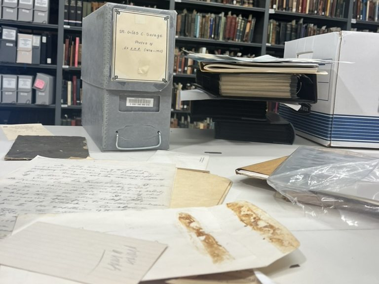
Why "Kurrent"? Kurrent is the old German handwriting that fills so many family letters and records; Fraktur is its printed cousin, the blackletter type of old German books and newspapers. Reading both is one of the things I do best.
Based in Nashville · On-site across the Southeast · Anywhere by Zoom
Fonds & Folders
A fonds is everything one person or organization left behind. Whether yours fills a single folder or a whole warehouse, it deserves care.
A first look at what's in the boxes, the attic, or the gallery: an inventory, condition notes, and a plan for what comes next.
Arrangement, description, and rehousing in archival-quality materials, with a finding aid so the collection can be found and used.
Consistent, searchable records for art, artifacts, and papers, in PastPerfect, ArchivesSpace, or a spreadsheet you can keep up yourself.
Tracing where objects and documents came from, through archives, libraries, and records in the U.S. and Germany.
Letters, diaries, and church and civil records read, transcribed, and translated, so families can understand and preserve them, including documents gathered for German citizenship applications.
Exhibit research, label and catalog copy, and talks that bring a collection to its community.
No appraisals or valuations. I don't put a dollar value on objects. My work is documenting, researching, and protecting your collection, and I'm glad to work alongside a credentialed appraiser if you need one.
No certified translations. I translate so you can understand your documents. When an agency requires certification, I'll help you prepare the material for a certified translator.
Specialists where they're needed. Cultural heritage and ethnographic materials can raise questions of ownership and return. I flag them and bring in the right experts rather than guess.
Recto & Verso
Every leaf has a front and a back. The recto is the work I've done; the verso is the training and the person behind it.
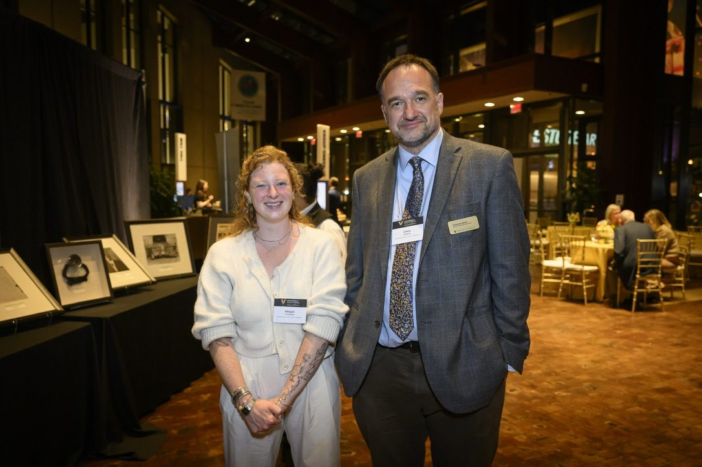
Exhibit · April 2025
With the History of Medicine Collections, helped mount a special anniversary exhibit at the Country Music Hall of Fame and Museum, including a Nobel Prize, photographs, and early hospital ephemera.
Museum · Exhibit · Preservation
Archival research on Vanderbilt's 1875 Vaughn Home for the "Hidden Narratives" exhibition, including research that fed the home's National Register nomination.
Special collections · Cataloging · 2023
Special Collections intern the year Tanya Tucker, Patty Loveless, and Bob McDill were inducted. Mapped the Hall of Fame Rotunda's inductee plaques, and helped process collections related to Elvis Presley, John Hartford, and John Prine in PastPerfect. Closed the internship by presenting my work to museum staff.
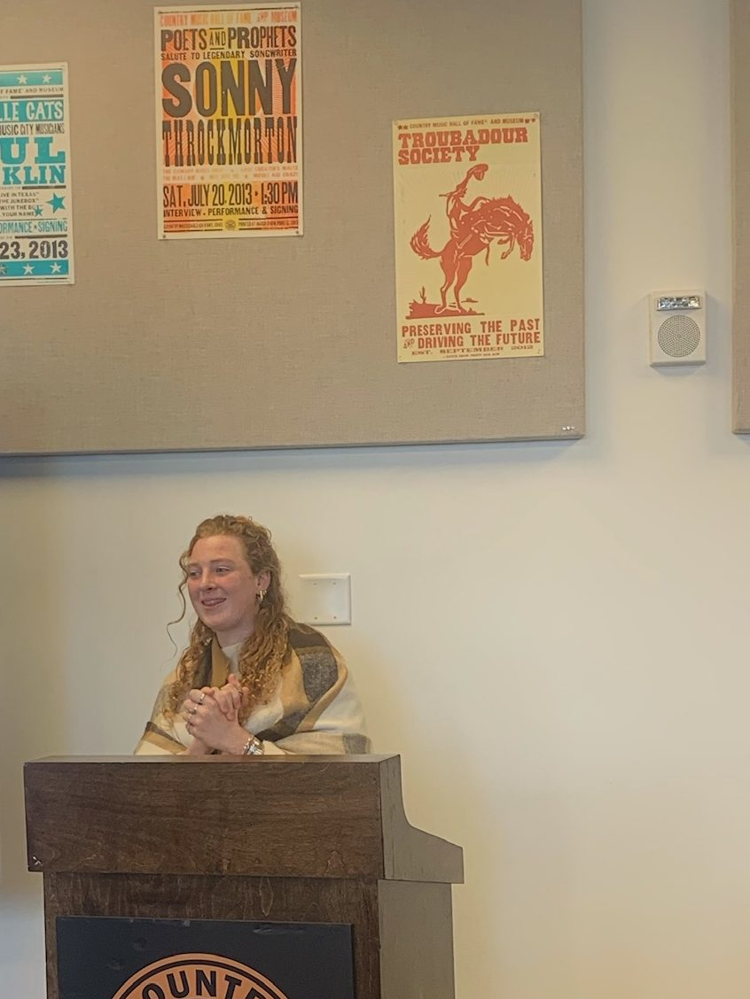
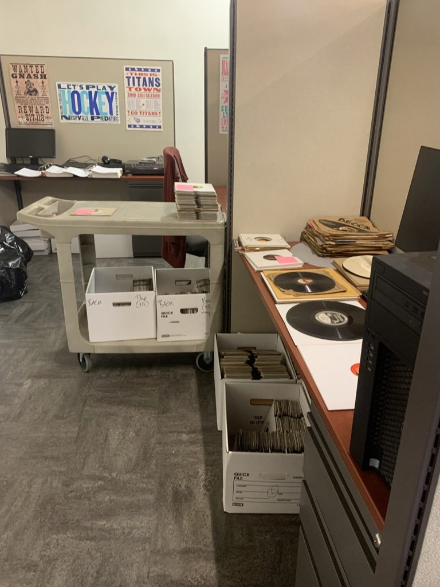
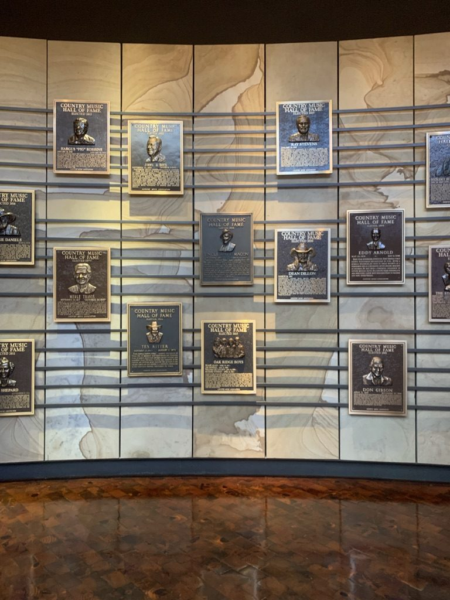
University archives · Processing
Archival processing and research services using ArchivesSpace, Aeon, ILLiad, and Aviary. Collections processed include the Beverly Douglas Papers; World War II medical artifacts and war documents; Dr. Robert Ransom's history of medicine collection; the Joel G. Hardman Papers; the Elaine B. Feldman Papers; and VUMC publications.
Scholarly publishing
Copyediting manuscripts on Tennessee and regional history, and preparing Cataloging-in-Publication data.
Private collections
Cataloging and documentation for a private art collection in Nashville, and German-script transcription for families preserving letters and records. [Client names only with permission.]
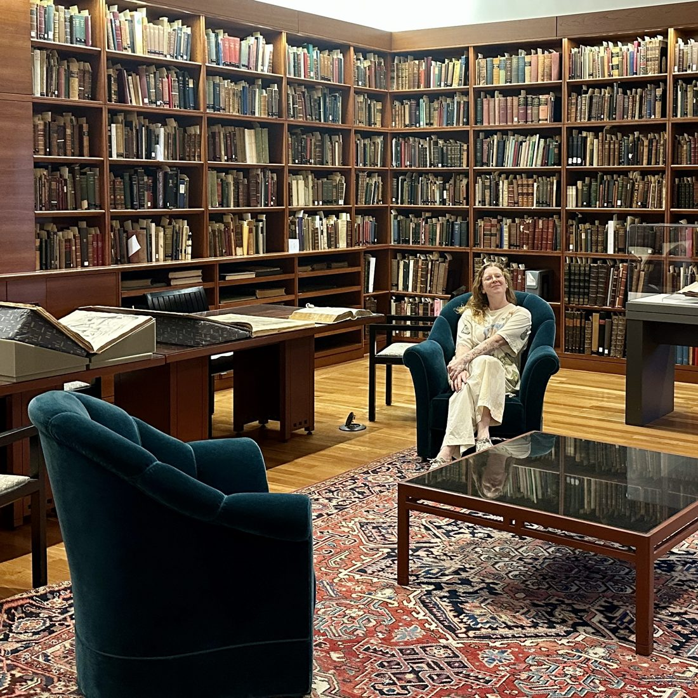
Hi! I'm Gail. I'm a scholar, archivist, and public historian in Nashville, but a Yinzer at heart. Students and friends began bringing old German letters and family documents to me for help. After years of receiving these objects, from friends and now a multitude of friends of friends, I learned how much it means to decipher words passed down for generations.
With over a decade of German teaching experience, from college freshmen to retirees, I've found much joy in explaining old things clearly to new people.
Reading Rooms
Literary archives, corporate archives, state libraries, and special collections on two continents. Each one taught me something about how collections are maintained, as well as how easily they may be lost.
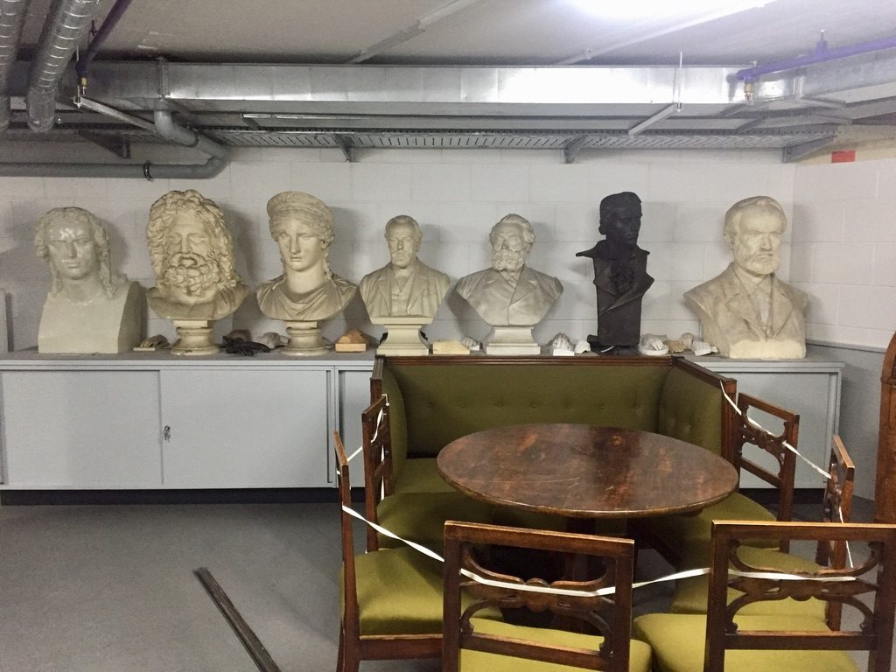
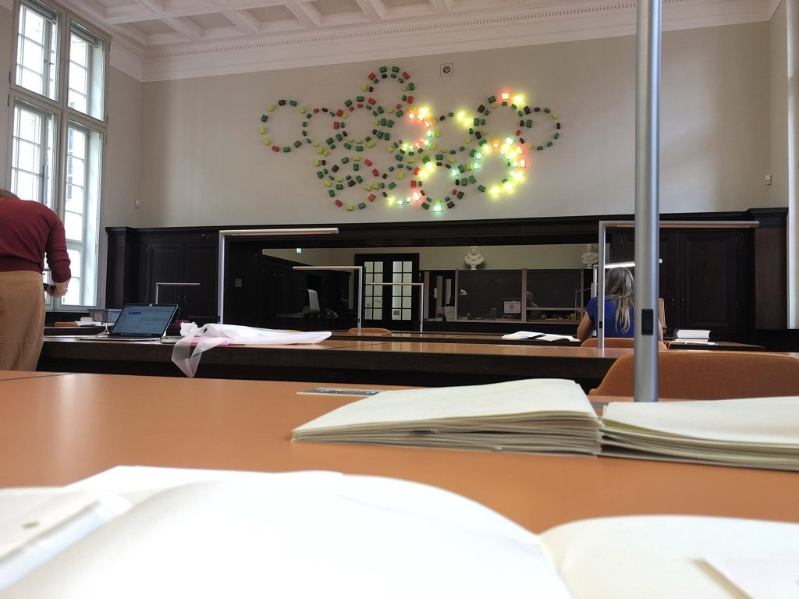
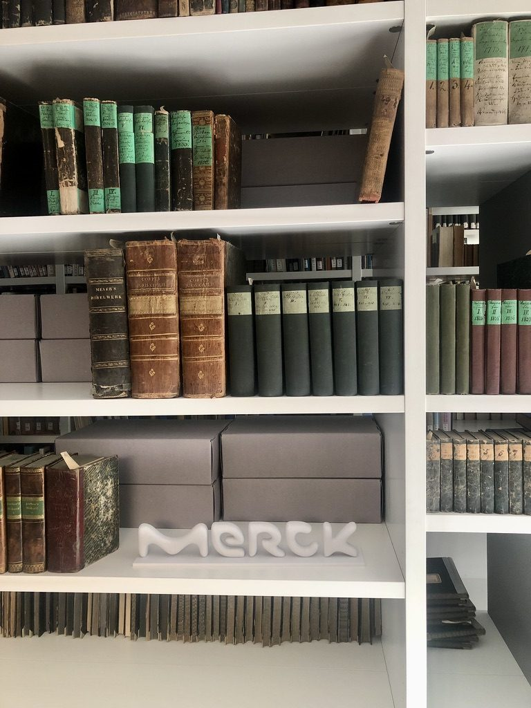
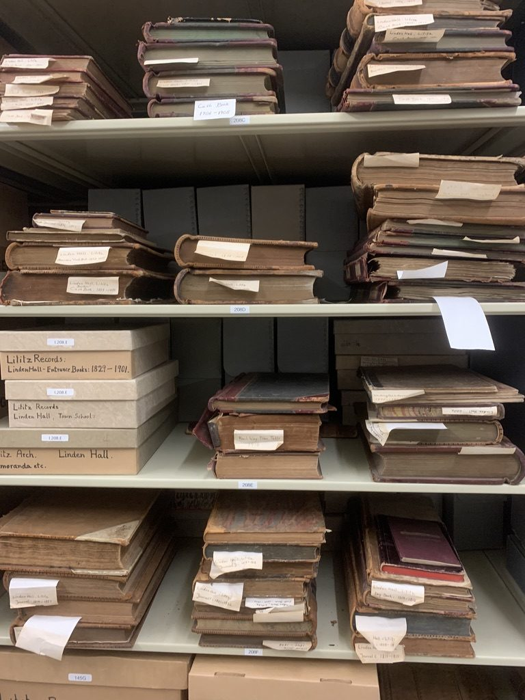
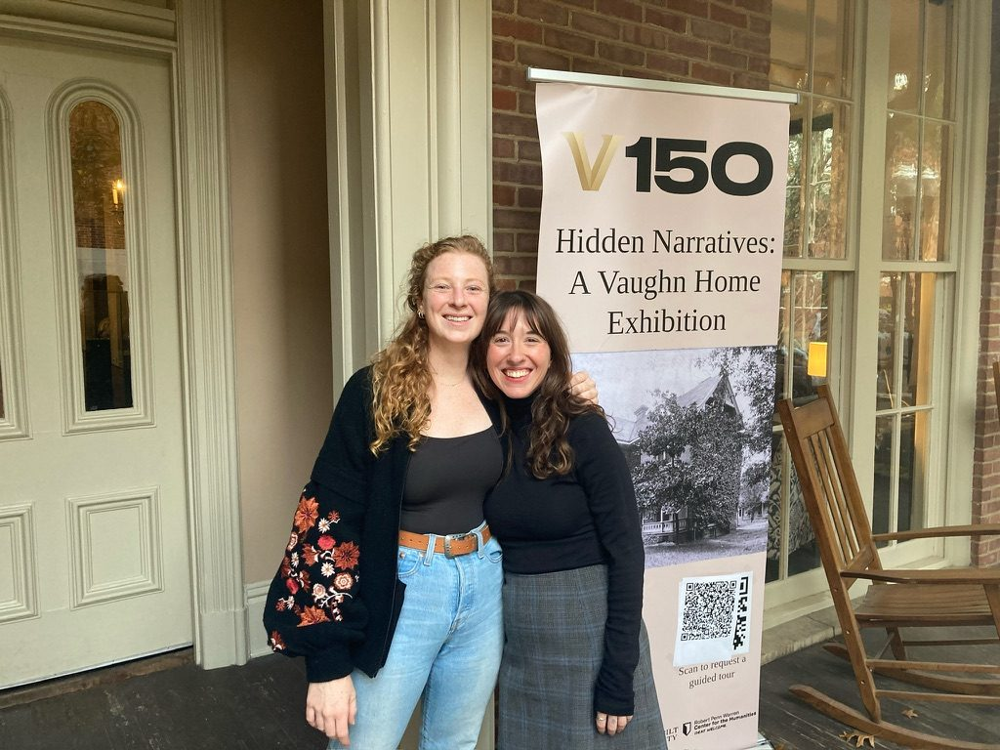
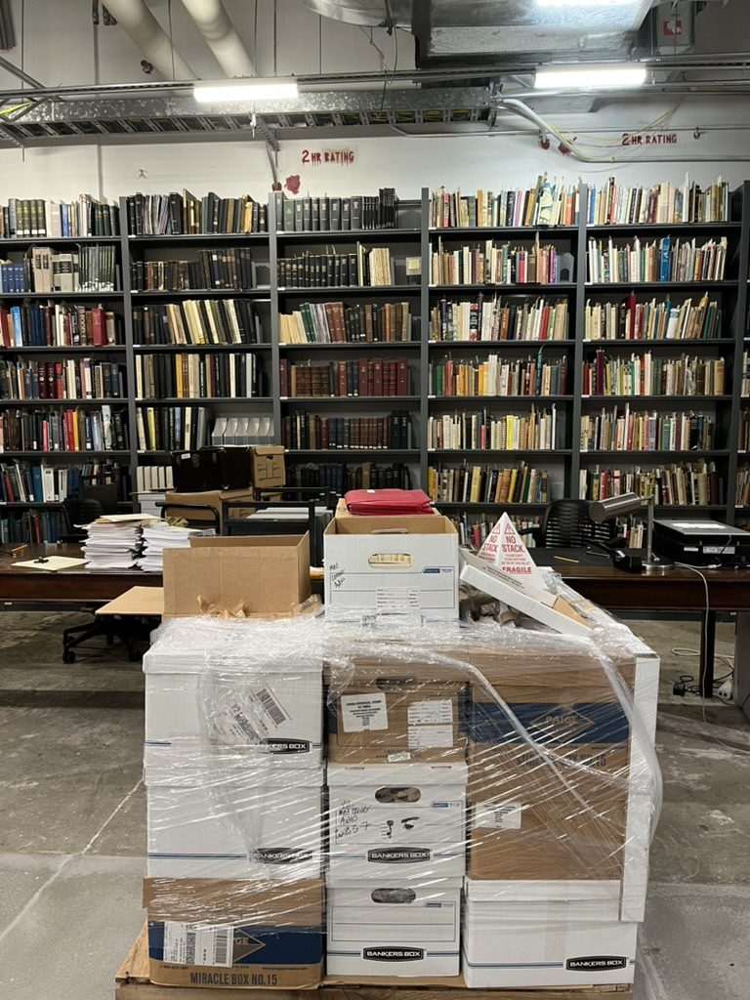
PhD Research
A Cross-Cultural History of a Life in Toxicology, Pharmacology, and Intoxication
Ph.D., Vanderbilt University · Defended April 24, 2026
Directed by Lutz Koepnick · Committee: James McFarland, Christoph Zeller, Shaul Kelner, Stephan Heckers
Louis Lewin, often called the founder of modern toxicology, was a German-Jewish scientist whose legacy was nearly lost. I rebuilt his story from his surviving papers, a family archive, and his 1887 travel diary, in archives in Berlin and Darmstadt and in his own German hand. Missing letters, destroyed laboratories, and demolished synagogues became part of the story rather than holes in it. The work lives on as the digital exhibition Phantastic Gifts: in German, Gift means poison; in English, a present.
It's the long-form proof of what I bring to your collection: patience with difficult documents, care for context, and the skill to turn a stack of papers into a story people can follow.
509
correspondents in Lewin's papers, across 42 countries
1887
a five-month travel diary across North America, read and translated
Berlin & Darmstadt
the archives where the research took place
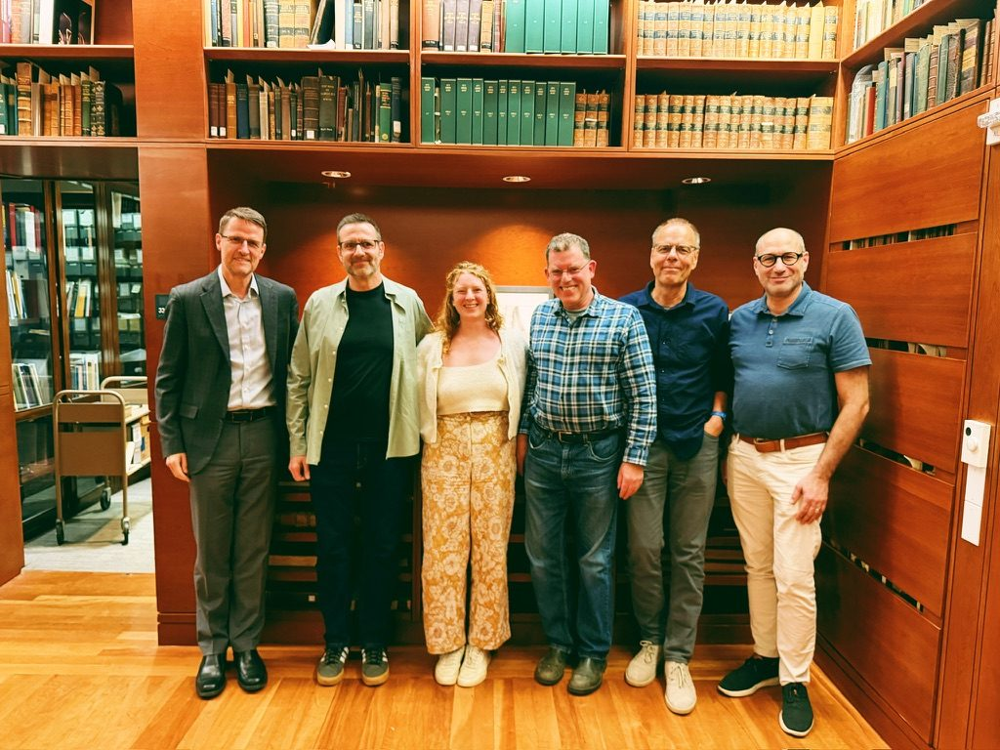
Rates
Every project begins with a conversation, not a checkout page. After we meet, if you're interested, you'll receive a written quote.
Free
Let's meet over coffee in Nashville or 30 minutes via Zoom.
from $40 / page
Handwritten transcription and translation; $80 minimum. Printed Fraktur priced lower.
from $450
On-site assessment, inventory, and a written preservation plan.
from $2,000
Processing projects with a finding aid, scoped by size and condition.
Custom quote
Reduced rates for nonprofit organizations, scoped to your budget and grant timelines.
Custom quote
Cataloging, provenance research, and rehousing, quoted after a site visit.
$75 / hour
Advice, research, and exhibit support. Travel beyond Middle Tennessee quoted separately.
Let's meet
I'd love to hear what you have and what you hope for it. I'll reply within two business days to set up a time to meet in person or by Zoom.
atrozens@utk.edu
Nashville, Tennessee